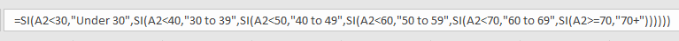
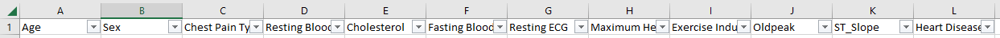
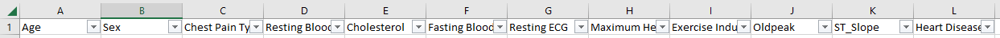
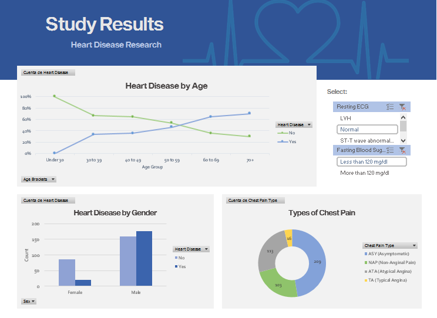

Indicators of Heart
Disease in Excel
This section will walk you through the process of
completing the project, as well as the tools that I used.

What is the project about?
In this project I used different methods to analyze and clean a dataset that contains information about a heart disease study. After that, I built and worked on a dashboard that shows the most relevant results of the study.
How was the data obtained?
It was obtained from a dataset found on the data science platform "Kaggle". This particular dataset shows the information of several studies conducted by 5 different hospitals and medical centers, including the Hungarian Institute of Cardiology, and the V.A. Medical Center, Long Beach and Cleveland Clinic Foundation.
Project Walkthrough
The datasetI started by choosing a dataset that I could work with. I decided to choose one with real and accurate data, but I also wanted it to have some small errors or formatting issues that I could detect and improve. That is why this heart disease dataset was very useful for the task. I also find this particular topic to be quite interesting.
PreparationThere are a few things that I normally like to do before I start working on a file. One of them is deciding the file format I will use. In this case, the original file was .csv and I decided to convert it to .xlsx, to avoid any potential issues. Another thing I did as preparation was creating a second Excel file, to preserve the original one without changes, just in case I need it.
Data CleaningSome of the things that I did as part of the data cleaning process:
- Removing duplicates.
- Adding filters and analyzing the data to spot any errors.
- Renaming headers to make them more clear and easier to recognize. Before
- Replacing the data in some columns such as "Sex" and "Chest Pain Type" to add more information and to make them easier to understand.
- Using nested Ifs to group ages by range, instead of keeping them individually. This will make the data more usable for visualization purposes.  Result
- Some formatting to make it look nicer.
 After
After

I created three pivot tables. The first one shows the prevalence of heart disease by age group. The second one shows the different types of chest pain and the amount of people affected by it. An the third one shows the prevalence of heart disease by gender.
Then from each pivot table I created a chart. Here is one example:

Dashboard
I built a dashboard, just to have a well-organized and friendly visual representation of the data. This allows users to quickly understand the information, as well as charts and key metrics.
I added two slicers, for the user to be able to filter multiple criteria at the same time (in this case, resting ECG and fasting blood sugar results).
Finally, I took some time to make some visual adjustments to the dashboard, focusing on details such as colors, design and other elements that can make the dashboard more visually appealing and more user-friendly.
This was the final result:
If you would like to take a look at the file, it is available on my Github profile.